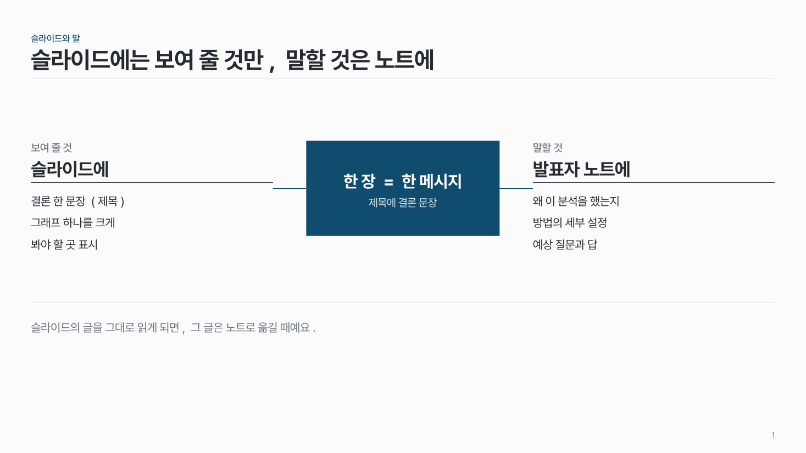
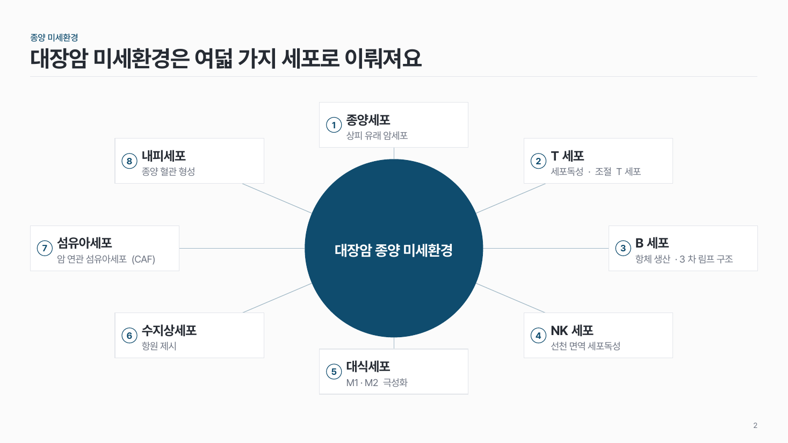
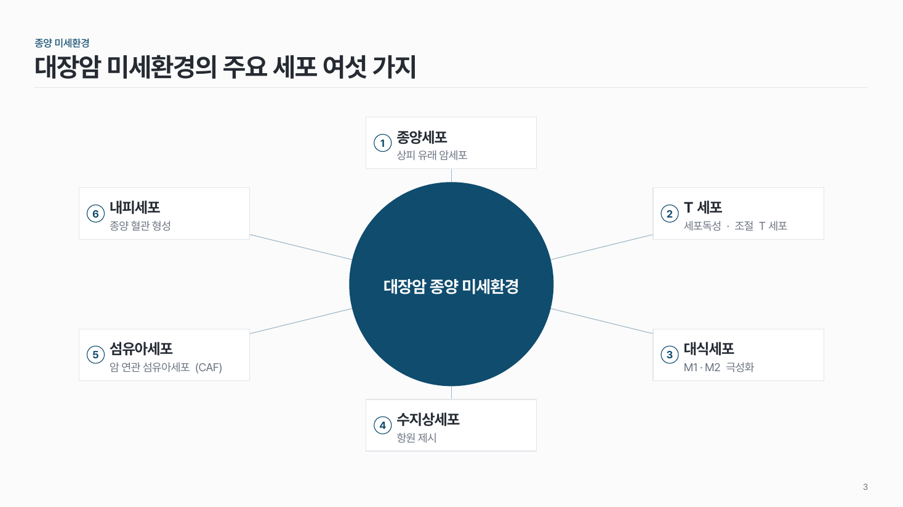

허브형 방사형 struct-03
가운데 진한 중심에서 주변 요소로 선을 하나씩 뻗어요. 양쪽 둘이거나 둘레 6–8개.

이 시안
가운데 + 양쪽 둘 · 아래 결론 줄
슬라이드 제목: 슬라이드에는 보여 줄 것만, 말할 것은 노트에
언제 쓰나
하나의 중심 개념이 주변 요소와 각각 이어질 때요. 요소끼리 순서나 위계가 없고 중심과의 관계만 보여 줄 때 맞아요.
구성
- 가운데 중심 (진한 면).
- 양쪽 둘이면 왼쪽·오른쪽에 소제목 + 목록.
- 6–8개면 둘레에 같은 간격으로 박스를 놓고, 박스 안에 번호 + 키워드 + 짧은 설명.
- 중심과 박스를 직선 하나씩으로 이어요 (화살촉 없이).
지킬 것
- 둘레 박스는 6–8개, 크기는 모두 같게.
- 키워드 10자, 설명 20자 안팎.
- 중심만 진한 색, 박스는 흰 면에 옅은 선.
하지 말 것
- 둘레 박스끼리 선으로 잇지 않아요.
- 박스마다 다른 색을 칠하지 않아요.
더 볼 게시물 Instagram @peedori_
시안 비교
같은 내용을 옵션만 바꿔 그렸어요. 그림을 누르면 크게 보여요.
A가운데 + 양쪽 둘 · 아래 결론 줄
슬라이드 제목: 슬라이드에는 보여 줄 것만, 말할 것은 노트에

B둘레 8개
슬라이드 제목: 대장암 미세환경은 여덟 가지 세포로 이뤄져요

C같은 내용 → 둘레 6개
슬라이드 제목: 대장암 미세환경의 주요 세포 여섯 가지